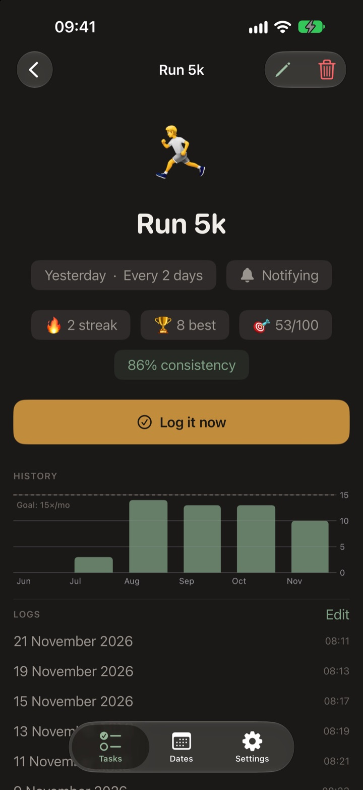
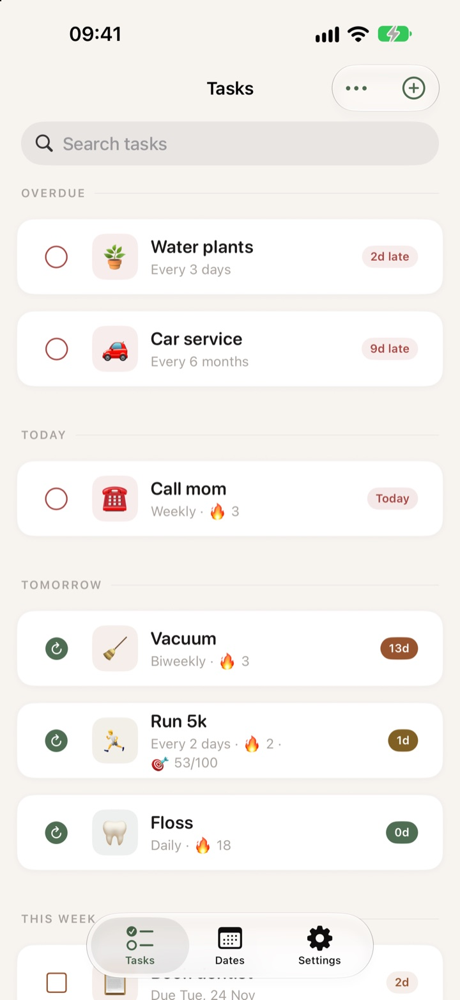
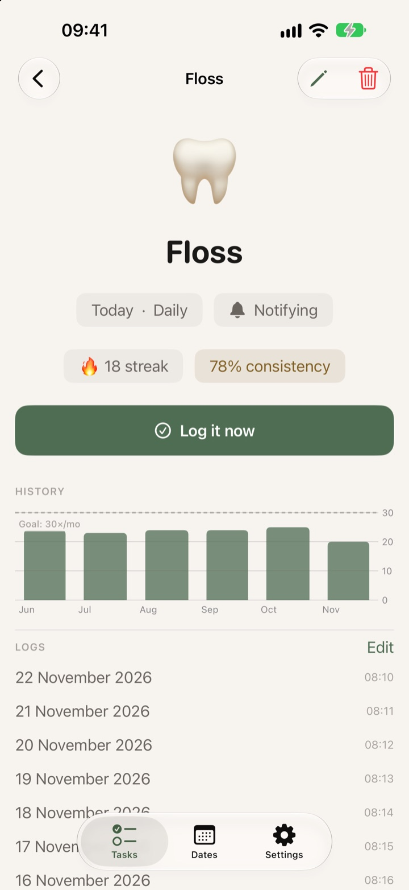
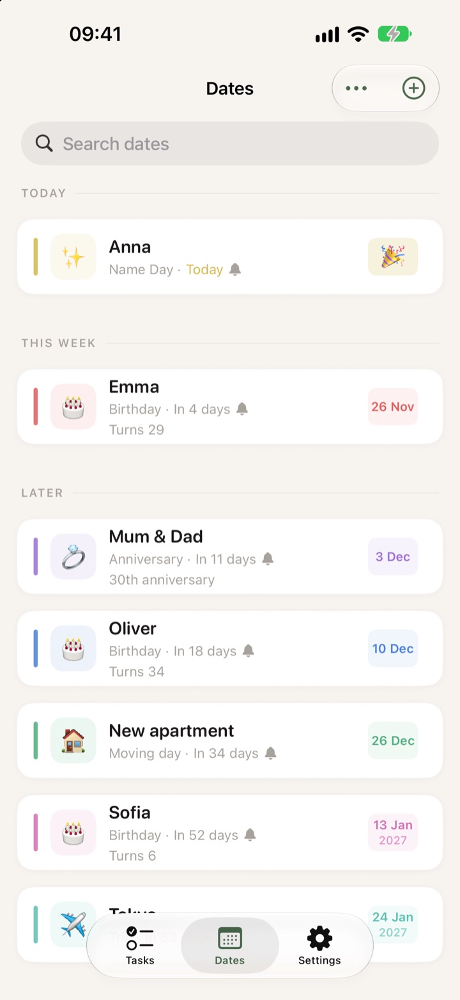
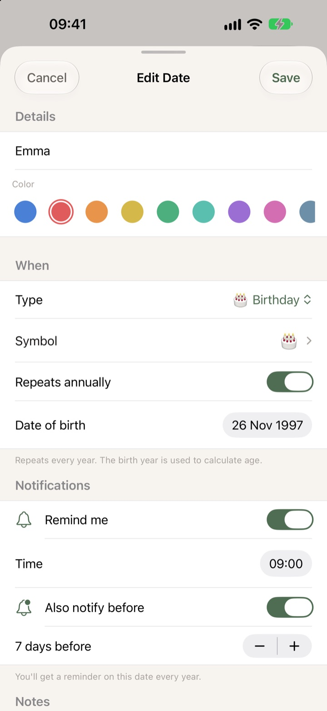
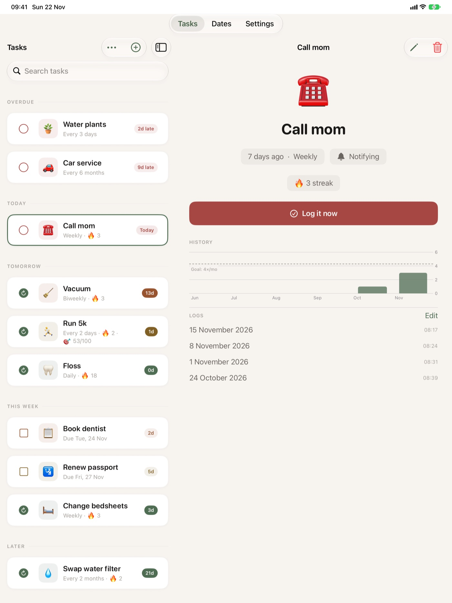
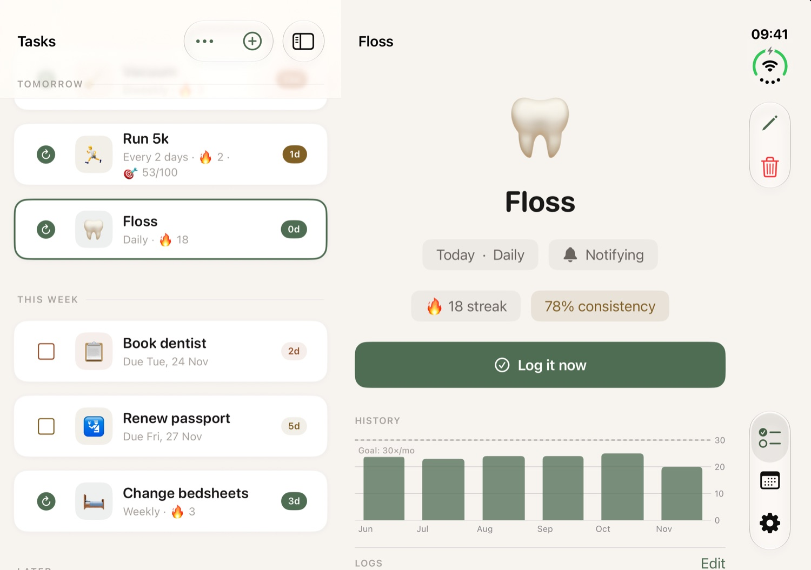

Lapse keeps track of the things you do regularly and the dates you can't forget,
so you don't have to keep them in your head.
For iPhone and iPad


How it works
Calm, simple, and always one step ahead
No clutter and no busy dashboards. Just what's due, what's coming up, and a gentle nudge at the right time.
Know what needs attention
Everything you do regularly, from watering the plants to calling mom, sorted by what's due next.
Overdue, today and coming up, at a glance
Repeating tasks and one-off to-dos side by side
Your own order, filters and saved views

One tap to log. Move on.
Mark something done from the list, the detail view or a widget. Streaks, consistency and a full history build up as you go.
A monthly chart of how often you've done it
Add a note to any log entry
Fix a mistake by editing the history

Never miss a birthday again
Birthdays, anniversaries, name days and one-off dates in one calm list. Lapse counts the days, and the age or year they're turning.
“Turns 29” and “30th anniversary”, worked out for you
A colour and emoji for every date
Dates with or without a year

Reminders that show up on time
Get a heads-up days before, then again on the day. Tasks remind you when they're due, and the notifications say clearly what's up.
Pick the time and how many days ahead
Turn reminders on or off per task and date
Set a goal, watch it grow
Give any task a goal and follow your progress, with your best streak and consistency right next to it.
Goals for anything you want to do more of
Looks just as good in dark mode
New in 1.3
Room to breathe on iPad
Lapse now runs on iPad. On iPad and the unfolded iPhone Duo, a task's details open right beside your list, so you can check its history without losing your place.
Everything stays in sync with your iPhone through iCloud.


The little things
Thoughtful all the way down
Interactive widgets
Log tasks straight from the Home Screen. Widgets follow dark mode and tinted styles.
iCloud sync
Your tasks and dates follow you across your iPhone and iPad, with no account to create.
Private by default
No ads and no third-party analytics. Your data stays on your devices and in your iCloud.
Your way
Drag tasks into your own order, filter by status or interval, and save the views you use.
Notes on every log
Jot down how it went, what you changed, or anything worth remembering next time.
Made for everyone
Works with VoiceOver and larger text, keeps colours readable, and respects Reduce Motion.
Start keeping track
Lapse for iPhone and iPad. Never miss what matters.